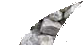
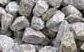

Specific gravity of coarse aggregates
Objective
To determine the specific gravity of coarse aggregate using pycnometer.
Apparatus used:
Pycnometer, weighing balance, glass rod etc.


Take empty weight of pycnometer along with its cap.

Empty weight of pycnometer(W1)= _____ gm
_____
Open the cap to fill one third of pycnometer with coarse aggregate and weigh the pycnometer with aggregate.




Weight of pycnometer + 1/3rd of coarse aggregate(W2)= _____gm
_____
Add water to pycnometer upto the brim level and shake it well to remove air bubbles. Then weigh it using weigh balance.


Weight of pycnometer + 1/3rd of coarse aggregate +water (W3)=_____ gm
_____
Empty the pycnometer and fill water upto brim. Weigh the pycnometer.

Weight of flask+water (W4) = _____ gm
_____
Repeat the same procedure for further trials.
Observation
Empty weight of pycnometer(W1)= _____ gm
Weight Empty weight of pycnometer (W2) = _____gm
Weight of pycnometer + 1/3rd of coarse aggregate +water (W3) = _____ gm
Weight of pycnometer + water(W4) = _____ gm
Actual Specific gravity of coarse aggregate = _____
Entered Specific gravity of coarse aggregate = _____
Percentage(%) Error = _____
Average Specific gravity of coarse aggregate =
Trial =